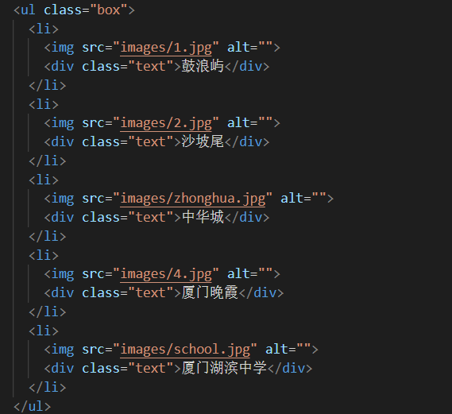
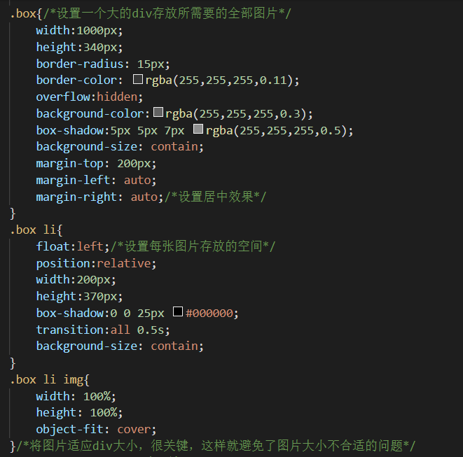
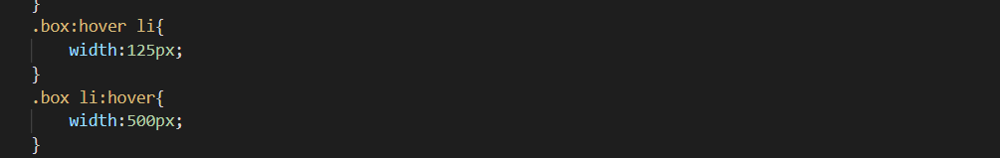

百叶窗CSS效果制作
1.html部分
百叶窗效果制作其实就是把这些图片放在一个列表里，相互叠加，鼠标移动的时候改变宽度 自然就展示了完整的图片，因此html部分使用ul标签构建一个百叶窗框架，再运用div插入 图片等方式优化

以上述的操作方法后，还需要加入css部分。
2.CSS部分
css部分就需要给大框架以及大框架中的小框架的宽度计算

这样操作下来基本的框架就已经出现了，大家可以动手试一试，需要提的是 上图中的overflow：hidden能够帮我们把图片超出容器范围的部分所隐藏 这样我们最后只需要加入该有的动画效果了。

上图这两行代码是极其关键的----首先要注意，两行代码的顺序不可以更换 首先鼠标移入 ul 的大容器内时，我们首先要让 li 的宽度变小，紧接着触发下一行的hover ，移入到每一个 li 的时候，让 li 的宽度变大
希望对大家有所帮助😊